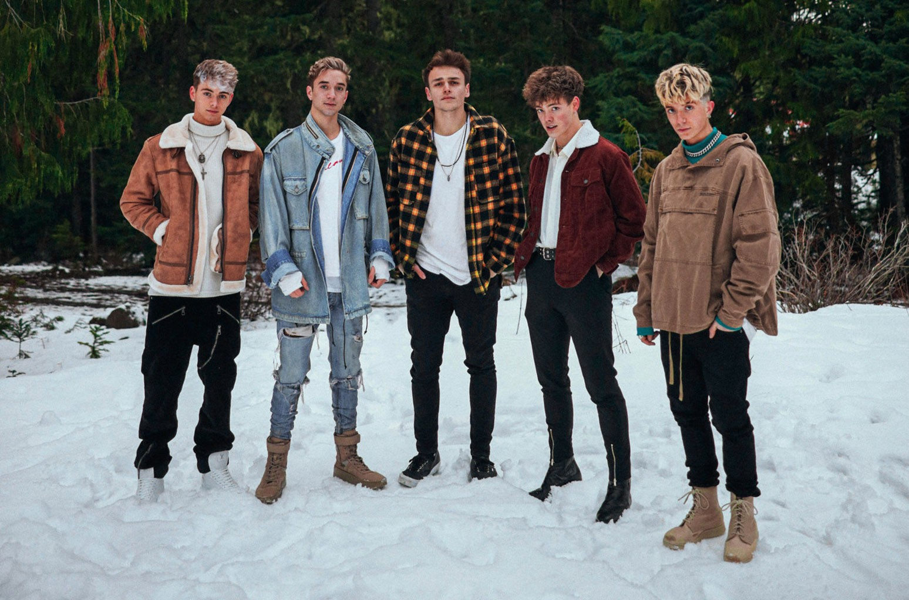

About

Why Don't We is een Amerikaanse band die is begonnen op 27 september 2016. De band bestaat uit 5 leden: Jonah Marais, Corbyn Besson, Daniel Seavey, Jack Avery en Zach Herron. De band is tot stand gekomen toen de vijf jongens hadden besloten om samen een beetje muziek te maken en elkaar te leren kennen. De ontmoeting was dus niet gepland door een platenmaatschappij, wat vaak genoeg wel gebeurt. De jongens hadden heel veel plezier om met elkaar muziek te maken en besloten om een band te vormen. De naam is gekomen doordat 1 van de vijf zei: "Why don't we make a band?". Hierdoor hebben ze besloten om de band de naam te geven 'Why Don't We'.
Fun Facts over Why Don't We
- Er was een tijdje dat alle vijf de jongens samen in een huis woonde in Los Angeles.
- Daniel speelt 20 intrumenten. Zijn favoriet is de cello.
- Zach heeft een grote obsessie met Bandana's en krijgt er nooit genoeg van.
- Jonah speelde voor zijn middelbare school in het slagbal team.
- Corbyn houdt van de ruimte, als klein kind wilde hij altijd astronaut worden.
- Voordat Jack in de band zat, ging hij op tour als solo artiest genaamd IMPACT
- Grote inspiraties voor de band zijn The Beatles en *NSYNC.
- In de eerste negen maanden dat de groep bestond, had het sociale media account van Why Don't We 1 miljoen volgers.